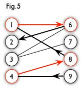
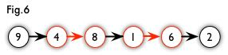

二分图最大匹配算法
- https://www.renfei.org/blog/bipartite-matching.html
- https://zoj.pintia.cn/problem-sets/91827364500/problems/91827364639
我觉得链接文章写得非常好，看这一篇就足够了。匈牙利算法的本质思想，还是不断地寻找增广路径。 对于 网络最大流问题 来说，增广路径就是在残留图上寻找s->t的可行路径，而对于二分图来说，增广路径是 "一条s,t分别是未匹配节点，中间所经过的节点都是匹配节点的路径"。
以下图为例，9->4->8->1->6->2就是一条增广路径
 
- (4,8),(1,6)是匹配节点
- 利用增广路径的话，我们可以增加一对匹配节点（多一条匹配边）
- 修改后匹配节点为 (9,4), (8,1), (6,2).
在算法最外层，我们需要遍历所有“未匹配”的节点，所以外层循环时间复杂度是O(V). 寻找增广路径的时间复杂度则是O(E). 所以总体时间复杂度是O(VE). 我的算法(BFS版本)在实现上和链接文章的里面给的实现有点不同，一个差别是将处理增广路径单独分离出来， 另外一个差别就是增广路径的表示我觉得会更加清晰一些。另外我的实现中顶点编号从1开始。
def hungarian(adj):
n = len(adj)
matching = [0] * n
check = [0] * n
parent = [0] * n
from collections import deque
dq = deque()
for t in range(1, n):
if matching[t] != 0: continue
dq.clear()
dq.append(t)
check[t] = t
parent[t] = 0
ending = 0
while dq and ending == 0:
u = dq.popleft()
for v in adj[u]:
if check[v] == t: continue
check[v] = t
parent[v] = u
if matching[v] == 0:
ending = v
break
else:
parent[matching[v]] = v
dq.append(matching[v])
# found a augmented path.
# ending -> p[ending] -> .. x -> t -> 0
path = []
while ending != 0:
p = parent[ending]
path.append(ending)
path.append(p)
matching[ending] = p
matching[p] = ending
ending = parent[p]
path = path[::-1]
print('augpath', path)
return matching